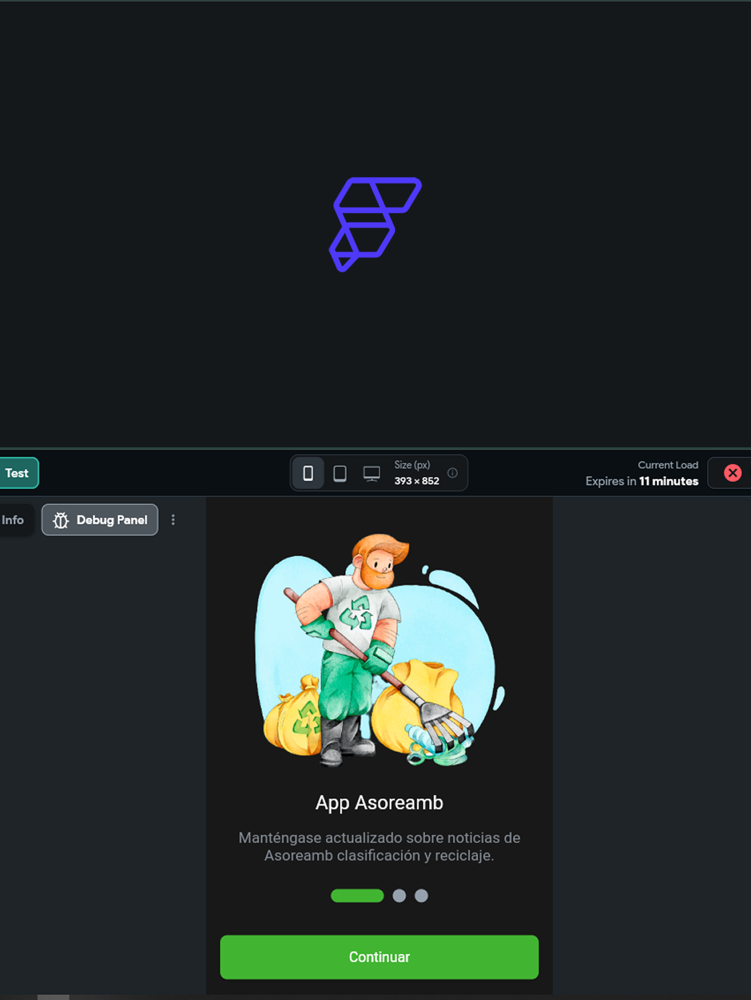

En esta sección presento proyectos de aplicaciones móviles desarrollados utilizando FlutterFlow, enfocados en resolver necesidades reales mediante soluciones funcionales, intuitivas y orientadas al usuario. Estos proyectos reflejan mi capacidad para diseñar y construir experiencias móviles completas, integrando lógica, datos y experiencia de usuario.

Documentación UX / Análisis de usabilidad web
Desarrollo de una aplicación móvil orientada a la gestión de usuarios y rutas operativas para una empresa de reciclaje. El objetivo fue facilitar el acceso a información relevante de la empresa y optimizar la visualización de rutas para los usuarios afiliados.
Diseñé y desarrollé la aplicación móvil utilizando FlutterFlow, implementando la estructura de pantallas, flujos de usuario y lógica de la aplicación. Integré una base de datos y un sistema de autenticación para garantizar el acceso seguro y la correcta gestión de la información. Además, gestioné el proceso de publicación en Google Play Store.
FlutterFlow, UX/UI, Bases de Datos, Autenticación, Google Play
Este proyecto fortaleció mi experiencia en el desarrollo de aplicaciones móviles funcionales, así como la integración de datos y sistemas de autenticación dentro de entornos mobile.